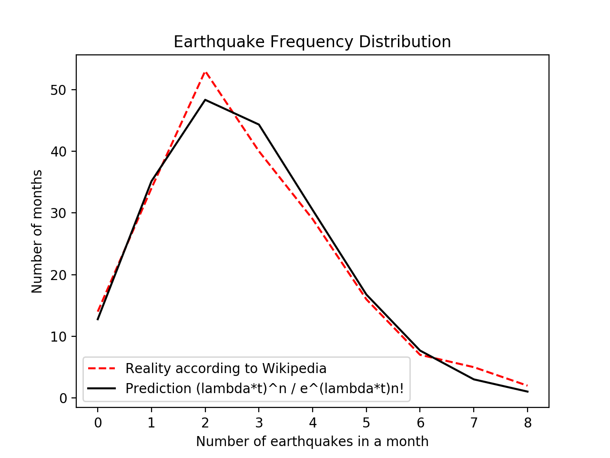

A Fishy Function
Sunday, July 16, 2017 · 17 min read
I started thinking about these ideas in late May, but haven’t gotten a chance to write about them until now…
If you want to take a boat from the Puget Sound to Lake Washington, you need to go across the Ballard Locks, which separate the Pacific Ocean’s saltwater from the freshwater lakes. The locks are an artificial barrier, built in the early 1900s to facilitate shipping.
Today, the locks have a secondary function: they are a picnic spot. A while back, I visited the locks on a sunny and warm day. A band was playing in the park by the water, and there were booths with lemonade and carnival games. Every few minutes, a boat would enter the locks, be raised or lowered, and continue on its way.
If you walk across the locks, you can check out the fish ladder, a series of raised steps designed to help fish — in this case, salmon — migrate, since the locks cut off their natural path between the water bodies. There is usually a crowd around the fish ladder. Around once a minute, a salmon leaps out of the water and goes up a step; the children gasp and cheer as they watch over the railing.
This is the idyllic scene that we will soon destroy with the heavy hammer of mathematical statistics. You see, it turns out that a little bit of thought about these salmon can give us a way to use historical earthquake data to approximate ($ e $).
But I’m getting ahead of myself. Let’s start at the beginning.
What is the probability that a fish jumps out of the water right now? This is a tricky question to answer. Suppose there’s a 10% chance that a fish jumps out of the water right now. That means the probability that a fish doesn’t jump is 90%. In the next instant of time, there’s again a 10% chance that the fish jumps. So, the laws of probability tell us that over the course of ($ n $) instants, there’s a ($ 0.90^n $) probability that no fish-jumps occur.
But there’s an infinite number of instants in every second! Time is continuous: you can subdivide it as much as you want. So the probability that no fish-jumps occur in a one-second period is ($ 0.90^\infty $), which is… zero! Following this reasoning, a fish must jump at least every second. And this is clearly a lie: empirically, the average time between fish-jumps is closer to a minute.
Okay, so “probability that a fish jumps right now“ is a slippery thing to define. What can we do instead? Since the problem seems to be the “right now” part of the definition, let’s try to specify a time interval instead of an instant. For example, what is the probability that we will observe ($ n $) fish-jumps in the next ($ t $) seconds?
Well, we’re going to need some assumptions. For simplicity, I’m going to assume from now on that fish jump independently, that is, if one fish jumps, then it does not affect the behavior of any other fish. I don’t know enough about piscine psychology to know whether or not this is a valid assumption, but it doesn’t sound too far-fetched.
While we’re on the subject of far-fetchedness: the math that follows is going to involve a lot of handwaving and flying-by-the-seat-of-your-pants. We’re going to guess at functions, introduce constants whenever we feel like it, evaluate things that may or may not converge, and, throwing caution and continuity to the wind, take derivatives of things that might be better left underived.
I think it’s more fun this way.
Yes, we could take the time to formalize the ideas with lots of definitions and theorems and whatnot. There’s a lot to be said about mathematical rigor, and it’s really important for you, the reader, to be extremely skeptical of anything I say. In fact, I encourage you to look for mistakes: the reasoning I’m about to show you is entirely my own, and probably has some bugs here and there. (The conclusions, for the record, match what various textbooks say; they just derive them in a slightly different way.)
A couple of lemmas here and there might make the arguments here much more convincing. But they will also make this post tedious and uninspiring, and I don’t want to go down that road. If you’re curious, you can look up the gnarly details in a book. Until then, well, we’ve got bigger fish to fry!
Okay, back to math. We can model the probability we’re talking about with a function that takes ($ n $) and ($ t $) as inputs and tells you the probability, ($ P(n, t) $), that you see ($ n $) fish-jumps in the time period ($ t $). What are some things we know about ($ P $)?
Well, for starters, ($ P(n, 0) = 0 $), since in no time, there’s no way anything can happen.
What about ($ P(n, a + b) $)? That’s the probability that there are ($ n $) fish-jumps in ($ a + b $) seconds. We can decompose this based on how many of the fish-jumps occurred in the “($ a $)” and “($ b $)” periods:
\begin{align} P(n, a+b) & = P(0, a)P(n, b) \\ & + P(1, a)P(n-1, b) \\ & + \ldots \\ & + P(n, a)P(0, b) \end{align}
Hmm. This looks familiar… perhaps…
Yes! Isn’t this what you do to the coefficients of polynomials when you multiply them? The coefficient of ($ x^n $) in ($ a(x)b(x) $) is a similar product, in terms of the coefficients of ($ x^i $) and ($ x^{n-i} $) in ($ a(x) $) and ($ b(x) $), respectively.
This can’t be a coincidence. In fact, it feels appropriate to break out this gif again:

Let’s try to force things into polynomial form and see what happens. Let ($ p_t(x) $) be a polynomial where the coefficient of ($ x^n $) is the probability that ($ n $) fish-jumps occur in time ($ t $):
\begin{align} p_t(x) &= P(0, t)x^0 + P(1, t)x^1 + \ldots \\ &= \sum_{n=0}^\infty P(n, t)x^n \end{align}
(Yes, fine, since ($ n $) can be arbitrarily large, it’s technically a “power series”, which is just an infinitely long polynomial. Even more technically, it’s a generating function.)
We know that ($ p_0(x) = 1 $), because nothing happens in no time, i.e. the probability of zero fish-jumps is “1” and the probability of any other number of fish-jumps is “0”. So ($ p_0(x) = 1x^0 + 0x^1 + \ldots $), which is equal to just “1”.
What else do we know? It should make sense that ($ p_t(1) = 1 $), since if you plug in “1”, you just add up the coefficients of each term of the polynomial. Since the coefficients are the probabilities, they have to add up to “1” as well.
Now, taking a leap of faith, let’s say that ($ p_{a+b}(x) = p_a(x)p_b(x) $), because when the coefficients multiply, they work the same way as when we decomposed the probabilities above.
Why is this property interesting,? We’re turning a property about addition into a property about multiplication. That sounds awfully like something else we’re used to: logarithms! Forgetting for a moment that ($ p $) is a power series, maybe we can “solve” for the function ($ p_t(x) $) by messing around with something like this:
\[ p_t(x) = e^{tx} \]
Okay, ($ e^{tx} $) doesn’t quite work because we want ($ p_t(1) = 1 $). Maybe ($ e^{t(x-1)} $) will work? It seems to have all the properties we want…
Let’s take a moment to stop and think. At this point, it’s not even clear what we’re doing. The whole point of defining ($ p_t(x) $) was to look at the coefficients, but when we “simplify” it into ($ e^{t(x-1)} $) we no longer have a power series.
Or do we?
Recall from calculus class that you can expand out some functions using their Taylor Series approximation, which is a power series. In particular, you can show using some Fancy Math that
\begin{align} e^x &= \frac{x^0}{0!} + \frac{x^1}{1!} + \frac{x^2}{2!} + \ldots \\ &= \sum_{n=0}^\infty \frac{x^n}{n!} \end{align}
If you haven’t taken calculus class yet, I promise this isn’t black magic. It’s not even plain magic. It’s just a result of a clever observation about what happens to ($ e^x $) when you increase ($ x $) by a little bit.
If you have taken calculus, bet you didn’t think this “series approximation” stuff would ever be useful! But it is, because a quick transformation gives us the series representation for ($ p_t(x) $):
\[ e^{t(x-1)} = e^{tx}/e^t = \sum_{n=0}^\infty \frac{(tx)^n}{n!e^t} \]
and so the coefficient of ($ x^n $) gives us ($ P(n, t) = t^n/(e^t n!) $).
Now we have a new problem: this formula doesn’t depend at all on the type of events we’re observing. In particular, the formula doesn’t “know” that the salmon at Lake Washington jump around once a minute. We never told it! Fish at other lakes might jump more or less frequently, but the formula gives the same results. So the formula must be wrong. Sad.
But it might be salvageable! Let’s go back and see if we can add a new constant to represent the lake we’re in. Perhaps we can call it ($ \lambda $), the Greek letter “L” for lake. Where could we slip this constant in?
Our solution for ($ p_t(x) $) was:
\[ p_t(x) = e^{t(x-1)} \]
but in retrospect, the base ($ e $) was pretty arbitrarily chosen. We could make the base ($ \lambda $) instead of ($ e $), but that would mess up the Taylor Series, which only works with base ($ e $). That would be inconvenient.
However, we know that we can “turn” ($ e $) into any number by raising it to a power, since ($ e^{\log b} = b $). If we want base ($ b $), we can replace ($ e $) with ($ e^{\log b} $). This suggests that ($ \lambda = \log b $) could work, making our equation:
\[ p_t(x) = \left(e^\lambda\right)^{t(x-1)} = e^{(\lambda t) (x-1)} \]
This seems to fit the properties we wanted above (you can check them if you want). Going back to our Taylor Series expansion, we can just replace ($ t $) with ($ \lambda t $) to get:
\[ P(n, t) = \frac{\left(\lambda t\right)^n}{e^{\lambda t} n!} \]
Let’s step back and think about what we’re claiming. Knowing only that fish jump randomly, and roughly independently, we claim to have an expression for the probability that ($ n $) fish-jumps occur in a time interval ($ t $).
“Okay, hold up,” you say, “something smells fishy about this. This is pretty bold: we know nothing about how fish think, or fluid dynamics, or whatever other factors could influence a fish’s decision to jump. And yet we have this scary-looking expression with ($ e $) and a factorial in there!”
That’s a fair point. I’m just as skeptical as you are. It would be good to back up these claims with some data. Sadly, I didn’t spend my time in Seattle recording fish-jumping times. But, in a few more sections, I promise there will be some empirical evidence to assuage your worries. Until then, let’s press on, and see what else we can say about fish.
We have a way to get the probability of some number of fish-jumps in some amount of time. What’s next?
One thing we can do is compute the average number of fish-jumps in that time interval, using expected value. Recall that to find expected value, you multiply the probabilities with the values. In this case, we want to find:
\[ E_t[n] = \sum_{n=0}^\infty P(n, t)n \]
This looks hard… but also oddly familiar. Remember that
\[ p_t(x) = \sum_{n=0}^\infty P(n, t)x^n \]
because, y’know, that’s how we defined it. Using some more Fancy Math (“taking the derivative”), this means that
\[ \frac{dp_t(x)}{dx} = \sum_{n=0}^\infty P(n, t)nx^{n-1} \]
and so ($ E_t[n] = p^\prime_t(1) $).
That… still looks hard. Derivatives of infinite sums are no fun. But remember from the last section that we also have a finite way to represent ($ p_t(x) $): what happens if we take its derivative?
\begin{align} p_t(x) &= e^{(\lambda t) (x-1)} \\ p^\prime_t(x) &= (\lambda t)e^{(\lambda t) (x-1)} \\ p^\prime_t(1) &= E_t[n] = \lambda t \end{align}
Aha! The average number of fish-jumps in time ($ t $) is ($ \lambda t $). If ($ t $) has units of time and ($ \lambda t $) has units of fish-jumps, this means that ($ \lambda $) has units of fish-jumps-per-time. In other words, ($ \lambda $) is just the rate of fish-jumps in that particular lake! For Lake Washington, ($ \lambda_w = 1/60 \approx 0.0167 $) fish-jumps-per-second, which means that the probability of seeing two fish-jumps in the next thirty seconds is:
\[ p_{30}(2) = \frac{(0.0167\times30)^2}{e^{0.0167\times30}2!} \approx 0.076 \]
I think that’s pretty neat.
What about the standard deviation of the number of fish-jumps? That sounds ambitious. But things have been working out pretty well so far, so let’s go for it.
Standard deviation, or ($ \sigma $), the Greek letter “sigma”, is a measure of “how far, on average, are we from the mean?” and as such seems easy to define:
\[ \sigma = E[n-\lambda t] \]
Well, this isn’t hard to evaluate. Knowing that expected values add up, we can do some quick math:
\begin{align} \sigma &= E[n] - E[\lambda t] \\ &= \lambda t - \lambda t = 0 \end{align}
Oops. We’re definitely off by a little bit on average, so there’s no way that the standard deviation is 0. What went wrong?
Well, ($ n - \lambda t $) is negative if ($ n $) is lower than expected! When you add the negative values to the positive ones, they cancel out.
This is annoying. But there’s an easy way to turn negative numbers positive: we can square them. Let’s try that.
\begin{align} \sigma^2 &= E[(n-\lambda t)^2] \\ &= E[n^2 - 2n\lambda t + (\lambda t)^2] \end{align}
Now what? We don’t know anything about how ($ E[n^2] $) behaves.
Let’s go back to how we figured out ($ E[n] $) for inspiration. The big idea was that
\[ \frac{dp_t(x)}{dx} = \sum_{n=0}^\infty P(n, t)nx^{n-1} \]
Hmm. What if we take another derivative?
\[ \frac{d^2p_t(x)}{dx^2} = \sum_{n=0}^\infty P(n, t)n(n-1)x^{n-2} \]
We get an ($ n(n-1) $) term, which isn’t quite ($ n^2 $), but it’s degree-two. Let’s roll with it. Following what we did last time,
\begin{align} p_t(x) &= e^{(\lambda t)(x - 1)} \\ p^\prime_t(x) &= (\lambda t)e^{(\lambda t)(x - 1)} \\ p^{\prime\prime}_t(x) &= (\lambda t)(\lambda t)e^{(\lambda t)(x - 1)} \\ E[n(n-1)] &= p^{\prime\prime}_t(1) \\ &= (\lambda t)^2 \end{align}
And now we have to do some sketchy algebra to make things work out:
\begin{align} \sigma^2 &= E[(n-\lambda t)^2] \\ &= E[n^2 - 2n\lambda t + (\lambda t)^2] \\ &= E[n^2 - n - 2n\lambda t + n + (\lambda t)^2] \\ &= E[(n^2 - n) - 2n\lambda t + n + (\lambda t)^2] \\ &= E[n^2 - n] - E[2n\lambda t] + E[n] + E[(\lambda t)^2] \\ &= (\lambda t)^2 - 2(\lambda t)(\lambda t) + \lambda t + (\lambda t)^2 \\ &= \lambda t \end{align}
…which means ($ \sigma = \sqrt{\lambda t} $).
Seems like magic.
Okay, fine, we have this fancy function to model these very specific probabilities about fish-jump-counts over time intervals. But the kids watching the fish ladder don’t care! They want to know what’s important: “how long do I need to wait until the next fish jumps?”
Little do they know, this question opens up a whole new can of worms…
Until now, we’ve been playing with ($ n $) as our random variable, with ($ t $) fixed. Now, we need to start exploring what happens if ($ t $) is the random variable. This needs some new ideas.
Let’s start with an easier question to answer. What is the probability that you need to wait longer than five minutes (300 seconds) to see a fish-jump? (Five minutes is way longer than my attention span when looking at fish. But whatever.)
It turns out that we already know how to answer that question. We know the probability that no fish jump in five minutes: that’s equal to ($ p_{300}(0) $). Why? Well, when we plug in ($ x = 0 $), all the ($ x $) terms go away in the series representation, and we’re only left with (the coefficient of) the ($ x^0 $) term, which is what we want.
Long story short, the probability that you need to wait longer than five minutes is ($ e^{0.0167\times300(0-1)} = 0.00674 $). This means that the probability that you will see a fish-jump in the next five minutes is ($ 1 - e^{0.0167\times300(0-1)} $), which is around 0.9932. This is the probability that you have to wait less than five minutes to see a fish-jump. For an arbitrary time interval ($ T $), we have ($ P(t<T) = 1 - e^{-\lambda T} $), where ($ t $) is the actual time you have to wait.
Sanity check time! This gets close to 1 as ($ T $) gets higher, which sounds about right: the longer you’re willing to wait, the likelier it is that you’ll see a fish jump. Similarly, if fish jump at a higher rate, ($ \lambda $) goes up, and the probability gets closer to 1, which makes sense. Indeed, encouragingly enough, this equation looks very close to the equation we use for half-lives and exponential radioactive decay…
Now things are going to get a bit hairy. What is the probability that you have to wait exactly ($ T $), that is, ($ P(t = T) $)? This should be zero: nothing happens in no time. But let’s be reasonable: when we say “exactly” ($ T $), we really mean a tiny window between, say, ($ T $) and ($ T + dT $) where ($ dt $) is a small amount of time, say, a millisecond.
The question then is, what is ($ P(T < t < T + dt) $), which isn’t too hard to answer: it’s just ($ P(t < T + dt) - P(t < T) $), that is, you need to wait more than ($ T $) but less than ($ T + dT $). In other words,
\[ P(t \approx T, dT) = P(t < T+dT) - P(t < T) \]
where ($ dt $) is an “acceptable margin of error”.
This looks awfully like a derivative! We’re expressing the change in probability as a function of change in time: if I wait ($ dT $) longer, how much likelier am I to see a fish-jump?
Let’s rewrite our above equation to take advantage of the derivativey-ness of this situation.
\begin{align} P(t \approx T, dT) &= \left(\frac{P(t < T+dT) - P(t < T)}{dT}\right)dT\\ &= \left(\frac{d P(t < T)}{dT}\right)dT \\ &= \left(\frac{d (1-e^{-\lambda T})}{dT}\right)dT \\ &= \lambda e^{-\lambda T} dT \end{align}
By the way, this might give a simpler-but-slightly-less-satisfying answer to our initial question, “what is the probability that a fish jumps out right now?“ If we set ($ T $) to 0, then we get ($ P(t \approx 0, dT) = \lambda dT $). In other words, if fish jump out of the water at a rate ($ \lambda $), then for a tiny period of time ($ dT $), the probability of seeing a fish jump in that time is ($ \lambda dT $). This is one of those facts that seems really straightforward one day, and completely mindblowing the next day.
Anyway. Now that we have an approximation for the probability that you need to wait a specific time ($ T $), we can find an expected value for ($ t $) by taking the sum over discrete increments of ($ dt $):
\[ E[t] = \sum^\infty_{k=0} P(t \approx T, dT) \times T \]
where ($ T = k\times dT $). Since we’re talking about the limit as ($ dT $) gets smaller and smaller, it seems reasonable to assume that this thing turns into
\begin{align} E[t] &= \int^\infty_0 P(t \approx T, dT) \times T \\ &= \int^\infty_0 \lambda e^{-\lambda T} dT \times T \end{align}
You can integrate that by parts, or just use WolframAlpha, which tells you that ($ E[t] = \lambda^{-1} $).
…which is kind of obvious, isn’t it? Remember that ($ \lambda $) was the rate at which our fish jumped. If fish jump once a minute, shouldn’t we expect to have to wait a minute to see a fish jump? Isn’t this similar to the way wavelength and frequency are related?
The answer is, “yes and no”. “Yes”, the value ($ \lambda^{-1} $) is indeed pretty sensible in retrospect. A simpler way to derive it might have been to note that for any time period ($ T $), the expected number of fish-jumps is ($ \lambda T $) (as we found out above), and so the average time interval between fish-jumps would be ($ T / (\lambda T) = \lambda^{-1} $). The fact that the average interval between fish-jumps corresponds to the the expected interval is captured by the surprisingly well-known acronym “PASTA”: Poisson Arrivals See Time Averages (I’m not making this up!).
But “no”, it’s not “obvious” that you should have to wait the average inter-fish time!
Suppose you, like Rip Van Winkle, you woke up after a very long sleep, and you wanted to know “how much longer until Monday morning?”
Well, Monday mornings happen every 7 days, and so if you set ($ \lambda = 1/7 $), you should expect to have to wait 7 days until Monday.
But that’s silly! You definitely need to wait fewer than 7 days on average! In fact, most people would intuitively say that you need to wait 7/2 = 3.5 days on average: and they would be right. (The intuition is that on average, you’d wake up halfway between two Monday mornings.)
This is the so-called “Hitchhiker’s Paradox”: if cars on a highway through the desert appear roughly once an hour, how long does a hitchhiker who just woke up need to wait until he sees a car? It seems reasonable to say “half an hour”, since on average, you’d wake up halfway between two cars. On the other hand, with ($ \lambda = 1 $), you’d expect to wait an hour until you see a car.
So which one is right? And why are the answers different?
Well, the “Rip Van Winkle” interpretation assumes that cars on a desert highway — like Mondays — come at regular intervals. In reality, cars on a desert highway — like the salmon of Seattle — are usually independent. They might come in a cluster a few minutes after you wake up, or a lone car might come the next day. Crucially, the next car doesn’t “know” anything about previous cars, and so it doesn’t matter when you wake up: we call this property “memorylessness”.
It turns out that since there’s a nonzero probability of having to wait a very long time for a car, the average gets pulled up from half an hour. With that in mind, it’s really quite surprising that the true mean turns out to be exactly ($ 1/\lambda $).
And now, the aftermath.
Very little of the above discussion was fish-specific. The only properties of salmon that mattered here were that salmon jump randomly and independently of each other, at some rate ($ \lambda $). But our calculations work for any such process (let’s call such processes Poisson processes).
Poisson processes were studied as early as 1711 by de Moivre, who came up with the cool theorem about complex numbers. However, they’re named after Siméon Denis Poisson, who in 1837 studied (not fish, but) the number of wrongful convictions in court cases.
Today, Poisson processes model all sorts of things. Managers use it to model customers arriving at a grocery checkout. Programmers use it to model packets coming into a network. Both of these are examples of queueing theory, wherein Little’s Law relates ($ \lambda $) to how long things have to wait in queues. You could probably use a Poisson process to model how frequently bad things happen to good people, and use that to create a statistical model of how unfair the world is.
The upshot is this: even though I didn’t record any fish-jumping data back in Seattle, we can definitely try out these ideas on other “sporadic” processes. Wikipedia, it turns out, maintains a list of earthquakes that happened in the 21st century. Earthquakes are pretty sporadic, so let’s play with that dataset.
I scraped the date of each earthquake, and wrote a small script to count the the number of earthquakes in each month-long interval. That is, ($ t $) is 2,592,000 seconds. By “binning” my data by month, I got lots of samples of ($ n $). This gives an easy way to compute ($ P(n, t) $) “empirically”.
On the other hand, taking the total number of earthquakes and dividing by the total time range (around 17 years, since we’re in 2017) gives us the rate ($ \lambda $), which in this case works out to about ($ 1.06\times10^{-6} $) earthquakes per second. This gives a way to compute ($ P(n, t) $) “theoretically” by using our fancy formula with the factorial and whatnot.
\[ P(n, t) = \frac{\left(\lambda t\right)^n}{e^{\lambda t} n!} \]
Comparing the results gives us this pretty plot!

They match up surprisingly well.
What else can we say? Well, the average inter-earthquake time works out to ($ 1/\lambda $), or around 940,000 seconds. That’s about eleven days. On average, a reader of this blog post can expect to wait eleven days until the next earthquake of magnitude 7 or above hits.
And for those of you who have been wondering, “can we do these calculations in reverse to approximate ($ e $)?” the answer is, yes! We just solve the above equation for ($ e $).
\[ e\approx\left(\frac{P(n, t)n!}{(\lambda t)^n}\right)^{-(\lambda t)^{-1}} \]
In my case, using earthquake data for ($ n = 1 $), I got ($ e \approx 2.75 $). I’d say that’s pretty good for an algorithm that relies on geology for accuracy (in reality, ($ e $) is around 2.718).
In many ways, it is quite incredible that the Poisson process conditions — randomness, independence, constant rate — are all you need to derive conclusions for any Poisson process. Knowing roughly that customers at a burger place are random, act independently, and arrive around once a minute at lunchtime — and knowing nothing else — we can predict the probability that four customers arrive in the next three minutes. And, magically, this probability will have ($ e $) and a factorial in it.
Humans don’t evaluate expressions involving ($ e $) and factorials when they decide when to get a burger. They are subject to the immense complexity of human life, much like how salmon are subject to the immense complexity of the fluid mechanics that govern Lake Washington, much like how earthquakes are subject to the immense complexity of plate tectonics.
And yet, somehow statistics unites these vastly different complexities, finding order and meaning in what is otherwise little more than chaos.
Isn’t that exciting?
~ Fin. ~
Assorted references below.
- https://en.wikipedia.org/wiki/Poisson_distribution
- https://en.wikipedia.org/wiki/Exponential_field
- https://www.stat.auckland.ac.nz/~fewster/325/notes/ch4.pdf
- http://pages.cs.wisc.edu/~dsmyers/cs547/lecture_11_pasta.pdf
- https://www.netlab.tkk.fi/opetus/s383143/kalvot/E_poisson.pdf
Postscript, two weeks later. This morning at the coffee shop I realized that the Poisson distribution is a lot like the binomial distribution with a lot of trials: the idea is that you have lots of little increments of time, and a fish either jumps or doesn’t jump in each increment — this is called a Bernoulli process. Presumably, over a long period of time, this should even out to a Poisson process…
Recall that the probability of a fish-jump happening in some small time period ($ dt $) turned out to be ($ \lambda dt $) for our definition of ($ \lambda $) as the rate of fish-jumps. Can we go the other way, and show that if the probability of something happening is ($ \lambda dt $) for a small period of time ($ dt $), then it happens at a rate of ($ \lambda $)?
Turns out, yes!
The binomial distribution is a way to figure out, say, what the probability is that if I flip 100 counts, then exactly 29 of them land “heads” (a coin toss is another example of a Bernoulli process). More abstractly, the binomial distribution gives you the probability ($ B(N, k) $) that if something has probability ($ p $) of happening, then it happens ($ k $) times out of ($ N $) trials.
The formula for ($ B(N, k) $) can be derived pretty easily, and you can find very good explanations in a lot of high-school textbooks. So, if you don’t mind, I’m just going to give it to you for the sake of brevity:
\[ B(N, k) = \binom{N}{k} p^k (1-p)^{N-k} \]
Now, can we apply this to a Poisson process? Well, let’s say ($ k = n $), the number of times our event happens in time ($ t $). Then we have
\[ \binom{N}{n} p^n (1-p)^{N-n} \]
What next? We know that ($ p = \lambda dt $). Also, for time period ($ t $), there are ($ t / dt $) intervals of ($ dt $), so ($ N = t / dt $). That means we can substitute ($ dt = t / N $), and thus ($ p = \lambda (t / N) $). This gives us
\[ \binom{N}{n} (\lambda t / N)^n (1-\lambda t / N)^{N-n} \]
Oh, and of course to approximate a Poisson process, this is the limit as ($ N $) approaches infinity:
\[ \lim_{N\to\infty} \binom{N}{n} (\lambda t / N)^n (1-\lambda t / N)^{N-n} \]
This isn’t a hard limit to take if we break apart the product.
\[ \lim_{N\to\infty} \frac{N! (\lambda t)^n}{n!(N-n)! N^n} \lim_{N\to\infty}(1-\lambda (t / N))^{N-n} \]
The right half is surprisingly enough the definition of ($ e^{-\lambda t} $), since the ($ - n $) in the exponent doesn’t really matter. The left half is trickier: it turns out that ($ N! / (N-n)! $) is the product ($ N(N-1)\ldots(N-n+1) $). As a polynomial, it is degree ($ n $), and the leading term is ($ N^n $). But look! In the denominator, we have an ($ N^n $) term as well, so in the limit, those both go away.
We’re left with what simplifies to our expression for the Poisson distribution.
\begin{align} \lim_{dt\to 0} B(N=t/dt, p=\lambda dt) &= \frac{(\lambda t)^n}{n!}e^{-\lambda t} \\ &= \frac{(\lambda t)^n}{e^{\lambda t}n!} \\ &= P(\lambda, t) \end{align}
which I think is literally magic.